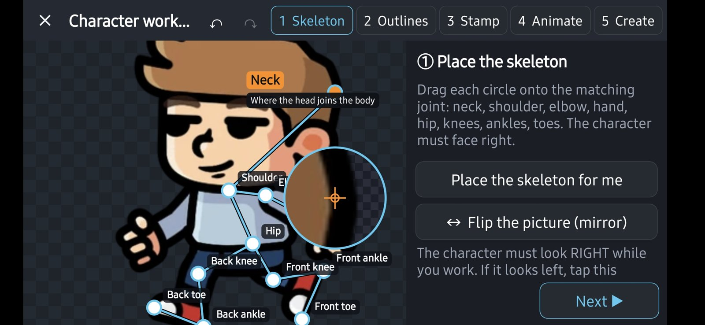

Dessiner une marche image par image est très long. Avec l'Atelier personnage, une seule image de ton personnage vu de côté suffit : Yop2D le découpe en morceaux (tête, corps, bras, jambes), fait bouger les articulations et fabrique les images des animations Repos, Marche, Course, Saut, Attaque et Touché.
Il te faut :
- un projet ouvert dans l'éditeur ;
- une image de ton personnage vu de côté (de préférence un PNG sur fond transparent), avec les bras et les jambes bien visibles.
Étape 1 : ouvrir l'atelier et choisir l'image
- Ouvre la fenêtre des Assets (panneau Ressources).
- En haut, touche le bouton Personnage, à côté de Planche.
- Touche Choisir l'image du personnage.
- Ton personnage regarde à gauche ? Touche Retourner l'image (miroir) : il doit regarder vers la droite pour travailler, et tes images finales regarderont bien à gauche.
👉 À tout moment, les boutons ↶ et ↷ du bandeau annulent et refont ce que tu viens de faire.
Étape 2 : poser le squelette
- Touche Poser le squelette pour moi : Yop2D essaie de deviner où sont le cou, les épaules, les coudes, les mains, les hanches, les genoux et les pieds.
- Corrige ce qui n'est pas juste : glisse chaque rond sur la bonne articulation. Une loupe s'affiche au-dessus de ton doigt pour que tu voies ce que tu fais.
- Touche Suivant ▶.

Étape 3 : entourer chaque partie
- Touche une partie dans la liste ou sur l'image (tête, torse, haut du bras, avant-bras, cuisse, mollet, pied…).
- Tire ses points pour que le contour suive bien le dessin. Un petit « + » au milieu d'un côté ajoute un point ; Enlever le point choisi en retire un.
- Pas envie de tout faire à la main ? Contour automatique propose un contour pour la partie choisie.
- Pour une manche courte, coche Cette partie reste collée au corps. Laisse décoché si le bras entier doit bouger, sinon tu verras deux bras.
Étape 4 : boucher les trous (facultatif)
Quand le bras ou la jambe bouge, un trou apparaît à l'endroit où il était. Cette étape est montrée avec le personnage en mouvement pour que tu voies les trous.
- 1. Choisir la zone modèle : touche une zone propre du dessin, par exemple le vêtement.
- 2. Peindre sur le trou : Yop2D recopie la zone choisie. Deux autres façons : 2b. Peindre avec la couleur de la zone, ou 2c. Remplir en plaçant des points autour du trou, puis Remplir la zone.
- 3. Gomme : efface ce qui dépasse ou ce qui pend.
- Si tu te trompes, Annuler le dernier coup ou Tout effacer.
Étape 5 : choisir les mouvements
- Choisis un mouvement : Repos, Marche, Course, Saut, Attaque ou Touché. L'aperçu tourne en boucle.
- Règle la Vitesse (images par seconde) et la Grandeur du mouvement (en pour cent) : plus c'est grand, plus les bras et les jambes bougent.
Étape 6 : créer les images
- Écris le Nom du personnage.
- Coche les mouvements à créer.
- Touche Créer les images. Elles sont rangées dans le dossier Images de ton projet, sous le nom du personnage, et les animations sont ajoutées à la liste.
👉 Les noms des animations sont choisis pour que le comportement « Personnage de plateforme » les reconnaisse tout seul : marche, saut, repos… s'enchaînent sans nœud supplémentaire.
Jouer les animations dans ton jeu
- Pose ton personnage dans la scène.
- Dans le Blueprint, ajoute « Jouer l'animation » et choisis l'animation créée (par exemple la marche), ou donne à l'objet le comportement « Personnage de plateforme » (voir le guide).
Les limites à connaître
- Vue de côté seulement : pas encore de vue de face.
- Le résultat est bon, pas parfait : Yop2D devine plus ou moins bien. Prends quelques minutes pour corriger le squelette et les contours.
- Un morceau caché derrière le corps laisse un trou quand il bouge : c'est l'étape « boucher les trous » qui sert à ça.
- Besoin d'une animation très précise ? Dessine-la image par image dans l'éditeur d'animations, ou découpe une planche d'images avec Planche.
Si ça ne marche pas
- Le squelette est posé de travers : déplace les ronds à la main, ou touche Poser le squelette pour moi après avoir mis l'image dans le bon sens.
- Deux bras apparaissent : décoche Cette partie reste collée au corps pour le bras.
- « Choisis au moins un mouvement » : coche au moins un mouvement avant de créer les images.